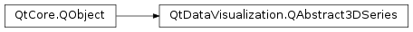

QtDataVisualization.QAbstract3DSeries¶
Inherited by: QtDataVisualization.QSurface3DSeries, QtDataVisualization.QBar3DSeries, QtDataVisualization.QScatter3DSeries
Synopsis¶
Functions¶
- def
baseColor() - def
baseGradient() - def
colorStyle() - def
isItemLabelVisible() - def
isMeshSmooth() - def
isVisible() - def
itemLabel() - def
itemLabelFormat() - def
mesh() - def
meshRotation() - def
multiHighlightColor() - def
multiHighlightGradient() - def
name() - def
setBaseColor(color) - def
setBaseGradient(gradient) - def
setColorStyle(style) - def
setItemLabelFormat(format) - def
setItemLabelVisible(visible) - def
setMesh(mesh) - def
setMeshAxisAndAngle(axis, angle) - def
setMeshRotation(rotation) - def
setMeshSmooth(enable) - def
setMultiHighlightColor(color) - def
setMultiHighlightGradient(gradient) - def
setName(name) - def
setSingleHighlightColor(color) - def
setSingleHighlightGradient(gradient) - def
setUserDefinedMesh(fileName) - def
setVisible(visible) - def
singleHighlightColor() - def
singleHighlightGradient() - def
type() - def
userDefinedMesh()
Signals¶
- def
baseColorChanged(color) - def
baseGradientChanged(gradient) - def
colorStyleChanged(style) - def
itemLabelChanged(label) - def
itemLabelFormatChanged(format) - def
itemLabelVisibilityChanged(visible) - def
meshChanged(mesh) - def
meshRotationChanged(rotation) - def
meshSmoothChanged(enabled) - def
multiHighlightColorChanged(color) - def
multiHighlightGradientChanged(gradient) - def
nameChanged(name) - def
singleHighlightColorChanged(color) - def
singleHighlightGradientChanged(gradient) - def
userDefinedMeshChanged(fileName) - def
visibilityChanged(visible)
Detailed Description¶
-
PySide2.QtDataVisualization.QtDataVisualization.QAbstract3DSeries.SeriesType¶
-
PySide2.QtDataVisualization.QtDataVisualization.QAbstract3DSeries.Mesh¶
-
PySide2.QtDataVisualization.QtDataVisualization.QAbstract3DSeries.baseColor()¶ Return type: PySide2.QtGui.QColor
-
PySide2.QtDataVisualization.QtDataVisualization.QAbstract3DSeries.baseColorChanged(color)¶ Parameters: color – PySide2.QtGui.QColor
-
PySide2.QtDataVisualization.QtDataVisualization.QAbstract3DSeries.baseGradient()¶ Return type: PySide2.QtGui.QLinearGradient
-
PySide2.QtDataVisualization.QtDataVisualization.QAbstract3DSeries.baseGradientChanged(gradient)¶ Parameters: gradient – PySide2.QtGui.QLinearGradient
-
PySide2.QtDataVisualization.QtDataVisualization.QAbstract3DSeries.colorStyle()¶ Return type: PySide2.QtDataVisualization.QtDataVisualization::Q3DTheme.ColorStyle
-
PySide2.QtDataVisualization.QtDataVisualization.QAbstract3DSeries.colorStyleChanged(style)¶ Parameters: style – PySide2.QtDataVisualization.QtDataVisualization::Q3DTheme.ColorStyle
-
PySide2.QtDataVisualization.QtDataVisualization.QAbstract3DSeries.isItemLabelVisible()¶ Return type: PySide2.QtCore.bool
-
PySide2.QtDataVisualization.QtDataVisualization.QAbstract3DSeries.isMeshSmooth()¶ Return type: PySide2.QtCore.bool
-
PySide2.QtDataVisualization.QtDataVisualization.QAbstract3DSeries.isVisible()¶ Return type: PySide2.QtCore.bool
-
PySide2.QtDataVisualization.QtDataVisualization.QAbstract3DSeries.itemLabel()¶ Return type: unicode
-
PySide2.QtDataVisualization.QtDataVisualization.QAbstract3DSeries.itemLabelChanged(label)¶ Parameters: label – unicode
-
PySide2.QtDataVisualization.QtDataVisualization.QAbstract3DSeries.itemLabelFormat()¶ Return type: unicode
-
PySide2.QtDataVisualization.QtDataVisualization.QAbstract3DSeries.itemLabelFormatChanged(format)¶ Parameters: format – unicode
-
PySide2.QtDataVisualization.QtDataVisualization.QAbstract3DSeries.itemLabelVisibilityChanged(visible)¶ Parameters: visible – PySide2.QtCore.bool
-
PySide2.QtDataVisualization.QtDataVisualization.QAbstract3DSeries.mesh()¶ Return type: PySide2.QtDataVisualization.QtDataVisualization::QAbstract3DSeries.Mesh
-
PySide2.QtDataVisualization.QtDataVisualization.QAbstract3DSeries.meshChanged(mesh)¶ Parameters: mesh – PySide2.QtDataVisualization.QtDataVisualization::QAbstract3DSeries.Mesh
-
PySide2.QtDataVisualization.QtDataVisualization.QAbstract3DSeries.meshRotation()¶ Return type: PySide2.QtGui.QQuaternion
-
PySide2.QtDataVisualization.QtDataVisualization.QAbstract3DSeries.meshRotationChanged(rotation)¶ Parameters: rotation – PySide2.QtGui.QQuaternion
-
PySide2.QtDataVisualization.QtDataVisualization.QAbstract3DSeries.meshSmoothChanged(enabled)¶ Parameters: enabled – PySide2.QtCore.bool
-
PySide2.QtDataVisualization.QtDataVisualization.QAbstract3DSeries.multiHighlightColor()¶ Return type: PySide2.QtGui.QColor
-
PySide2.QtDataVisualization.QtDataVisualization.QAbstract3DSeries.multiHighlightColorChanged(color)¶ Parameters: color – PySide2.QtGui.QColor
-
PySide2.QtDataVisualization.QtDataVisualization.QAbstract3DSeries.multiHighlightGradient()¶ Return type: PySide2.QtGui.QLinearGradient
-
PySide2.QtDataVisualization.QtDataVisualization.QAbstract3DSeries.multiHighlightGradientChanged(gradient)¶ Parameters: gradient – PySide2.QtGui.QLinearGradient
-
PySide2.QtDataVisualization.QtDataVisualization.QAbstract3DSeries.name()¶ Return type: unicode
-
PySide2.QtDataVisualization.QtDataVisualization.QAbstract3DSeries.nameChanged(name)¶ Parameters: name – unicode
-
PySide2.QtDataVisualization.QtDataVisualization.QAbstract3DSeries.setBaseColor(color)¶ Parameters: color – PySide2.QtGui.QColor
-
PySide2.QtDataVisualization.QtDataVisualization.QAbstract3DSeries.setBaseGradient(gradient)¶ Parameters: gradient – PySide2.QtGui.QLinearGradient
-
PySide2.QtDataVisualization.QtDataVisualization.QAbstract3DSeries.setColorStyle(style)¶ Parameters: style – PySide2.QtDataVisualization.QtDataVisualization::Q3DTheme.ColorStyle
-
PySide2.QtDataVisualization.QtDataVisualization.QAbstract3DSeries.setItemLabelFormat(format)¶ Parameters: format – unicode
-
PySide2.QtDataVisualization.QtDataVisualization.QAbstract3DSeries.setItemLabelVisible(visible)¶ Parameters: visible – PySide2.QtCore.bool
-
PySide2.QtDataVisualization.QtDataVisualization.QAbstract3DSeries.setMesh(mesh)¶ Parameters: mesh – PySide2.QtDataVisualization.QtDataVisualization::QAbstract3DSeries.Mesh
-
PySide2.QtDataVisualization.QtDataVisualization.QAbstract3DSeries.setMeshAxisAndAngle(axis, angle)¶ Parameters: - axis –
PySide2.QtGui.QVector3D - angle –
PySide2.QtCore.float
- axis –
-
PySide2.QtDataVisualization.QtDataVisualization.QAbstract3DSeries.setMeshRotation(rotation)¶ Parameters: rotation – PySide2.QtGui.QQuaternion
-
PySide2.QtDataVisualization.QtDataVisualization.QAbstract3DSeries.setMeshSmooth(enable)¶ Parameters: enable – PySide2.QtCore.bool
-
PySide2.QtDataVisualization.QtDataVisualization.QAbstract3DSeries.setMultiHighlightColor(color)¶ Parameters: color – PySide2.QtGui.QColor
-
PySide2.QtDataVisualization.QtDataVisualization.QAbstract3DSeries.setMultiHighlightGradient(gradient)¶ Parameters: gradient – PySide2.QtGui.QLinearGradient
-
PySide2.QtDataVisualization.QtDataVisualization.QAbstract3DSeries.setName(name)¶ Parameters: name – unicode
-
PySide2.QtDataVisualization.QtDataVisualization.QAbstract3DSeries.setSingleHighlightColor(color)¶ Parameters: color – PySide2.QtGui.QColor
-
PySide2.QtDataVisualization.QtDataVisualization.QAbstract3DSeries.setSingleHighlightGradient(gradient)¶ Parameters: gradient – PySide2.QtGui.QLinearGradient
-
PySide2.QtDataVisualization.QtDataVisualization.QAbstract3DSeries.setUserDefinedMesh(fileName)¶ Parameters: fileName – unicode
-
PySide2.QtDataVisualization.QtDataVisualization.QAbstract3DSeries.setVisible(visible)¶ Parameters: visible – PySide2.QtCore.bool
-
PySide2.QtDataVisualization.QtDataVisualization.QAbstract3DSeries.singleHighlightColor()¶ Return type: PySide2.QtGui.QColor
-
PySide2.QtDataVisualization.QtDataVisualization.QAbstract3DSeries.singleHighlightColorChanged(color)¶ Parameters: color – PySide2.QtGui.QColor
-
PySide2.QtDataVisualization.QtDataVisualization.QAbstract3DSeries.singleHighlightGradient()¶ Return type: PySide2.QtGui.QLinearGradient
-
PySide2.QtDataVisualization.QtDataVisualization.QAbstract3DSeries.singleHighlightGradientChanged(gradient)¶ Parameters: gradient – PySide2.QtGui.QLinearGradient
-
PySide2.QtDataVisualization.QtDataVisualization.QAbstract3DSeries.type()¶ Return type: PySide2.QtDataVisualization.QtDataVisualization::QAbstract3DSeries.SeriesType
-
PySide2.QtDataVisualization.QtDataVisualization.QAbstract3DSeries.userDefinedMesh()¶ Return type: unicode
-
PySide2.QtDataVisualization.QtDataVisualization.QAbstract3DSeries.userDefinedMeshChanged(fileName)¶ Parameters: fileName – unicode
-
PySide2.QtDataVisualization.QtDataVisualization.QAbstract3DSeries.visibilityChanged(visible)¶ Parameters: visible – PySide2.QtCore.bool
© 2018 The Qt Company Ltd. Documentation contributions included herein are the copyrights of their respective owners. The documentation provided herein is licensed under the terms of the GNU Free Documentation License version 1.3 as published by the Free Software Foundation. Qt and respective logos are trademarks of The Qt Company Ltd. in Finland and/or other countries worldwide. All other trademarks are property of their respective owners.